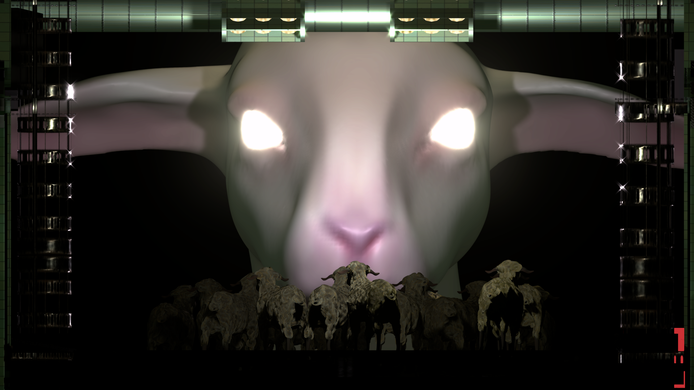
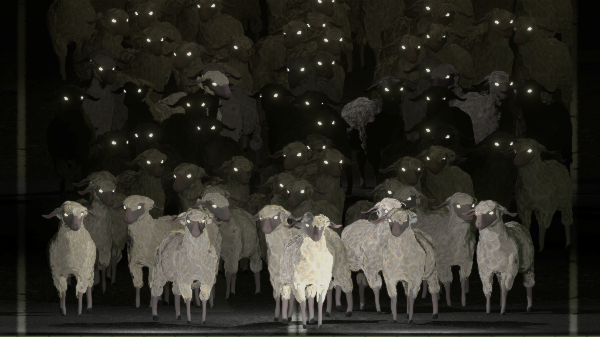
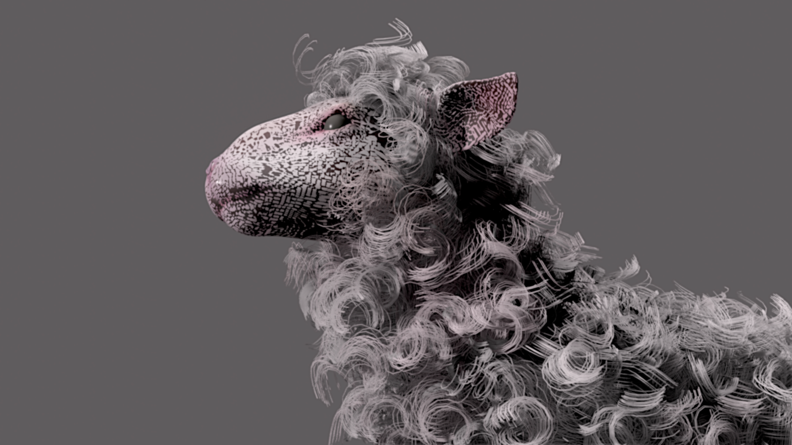
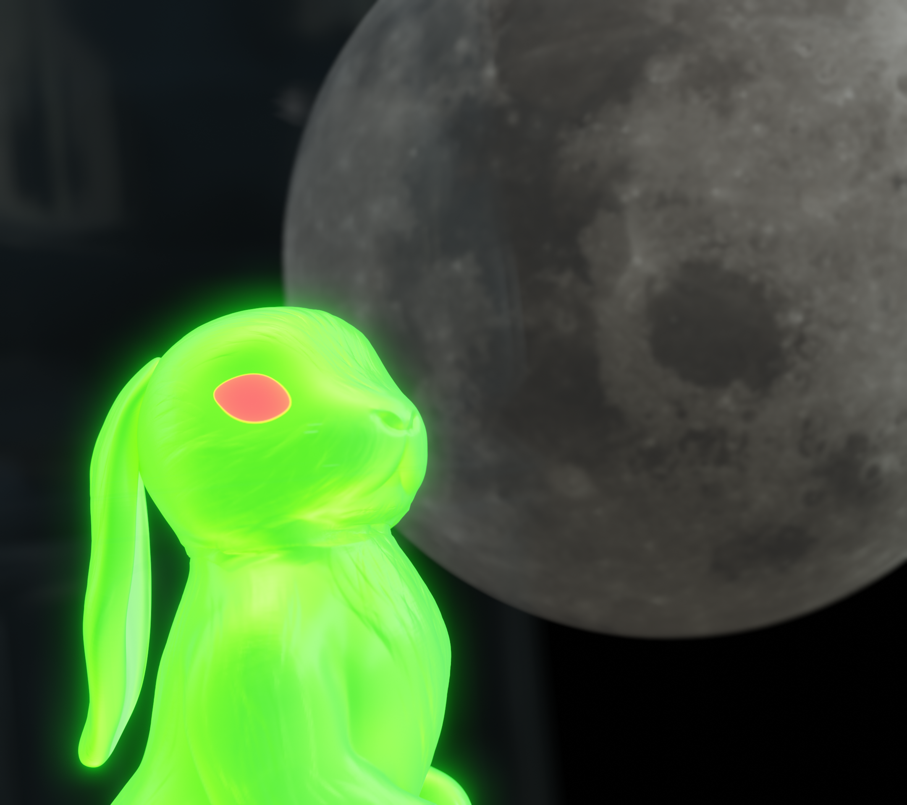

About
Bengi Ağçal (she/her) is a Macedonian-Turkish international student at Hong Kong University of Science Technology currently completing her bachelor's degree, majoring in Computer Engineering and Minoring in Psychological and Behavioral Science, as well as training for Yin Yoga teaching certification.
Aside from working part-time as a graphic designer and web developer at various institutes, she has worked as a student research assistant in the Environmental Science department and served as the president of the Climbing society, through which she developed her love for sustainability and nature.
Statement
Through experimenting on various digital and traditional methods such as 3D rendering, Internet computing, Generated Adversarial Networks, film, and recycled materials, Bengi explores the various themes of anthropomorphic animal narratives, climate change, nature rituals, and gender power dynamics. She draws references from current scientific research, science fiction, Anatolian pastoral culture, Chinese and Central Asian Traditions, and her experiences while living in Turkey and Hong Kong.
WORKS
Rosie
My first paid job ever was to harvest roses, the first time I joined the harvest season I was 9. At the beginning of the summer break, my best friend's aunt would drive us to a field where we would pick the roses. Once roses were picked, we would sit in a circle, a circle of all town women of all ages and lives, and pluck the rose leaves. In this circle, one could hear neighbor gossips, cooking recipes, marriage advice, and occasional hate speech towards the Kurdish.
This was my first encounter with fascism and racism in what was supposed to be a safe female space. Fueled by the media propaganda, these women were full of hate, and trusting those women, I adopted their beliefs. Eventually, this change got noticed by my parents and then it got revealed to me that I too was of Kurdish descent.
Rosie is a creature that only lives in those harvest circles and tries to blend in with roses.
Do The Sheep Dream of Android?
This 3D rendered set of scenes followed by a web-rendered interactive page explores the stages of how we humans have been able to alienate ourselves from nature? The emergence point of this narrative was a Turkish independence war legend about an unknown shepherd. While the country was under the invasion of many foreign enemies, This shepherd’s village, which is believed to be located in today’s Sakarya area, remained untouched.
As the invaders arrived late at night, they were greeted by a huge overwhelming crowd of villagers holding torches, waiting for them from a distance, ready for war. Intimidated by the scale of the crowd, the invaders ran away. Yet this huge village folk, big enough to scare away a whole army, had just been a herd with torches tied to their horns, a genius plan devised by the shepherd, and a beautiful collaboration of nature and humankind. However, the help of the sheep had been long forgotten and humans showed no gratitude. They abandoned this pastoral harmony to pursue technological exploitation under the name of “increased production”. - Credits Sourced

We Are Just a Visitor Driving Through
We Had Been One of Them All Along
A Wall To Be Built

Flooded With Tears of Separation
A Blurry Acquaintance
The Dream We Had - This one is an external website, you are encouraged to click on the image and view it :)
Men Who Follow Me on the Street
This audio-reactive GAN was trained on male faces from flickr.com to explore the somewhat universal experience of being stalked on the street. As a young girl in Turkey, feeling safe on the street was a rare luxury. The presence of men walking behind and the endless possibilities of what they may be capable of is a threat from the physical and paranoia of the mind. For me, It started when I became 12.
I had just started to walk across the town at night to go cram school. Surrounded by the fear of being alone and vulnerable in the dark, I eventually exchanged walking for running. Every weekday night I found myself running, running past the whole town. As the cars were honking, and the men were speeding up their steps, I ran faster. At that point nothing was coincidental, no one just happened to be on the street that night. Every driver, every pedestrian, they all had gathered to catch and hurt me. And as I was running away from them all I could get was a small glimpse of their faces, morphing into the face of the man from last week and the other one from the week before in the darkness. Every man behind me was the culprit until they made a turn to the other street.
Worth No More
During my time working as a Student Research assistant under the Environmental science department, my climate anxious brain came up with a brand new question to be paranoid about: Is climate change really the way the world will end? Given the ingenuity of mass destruction narratives, we had been made to believe, the ending of the world because of climate change seemed quite disappointing.
We were told to expect a final war to end them all, the ultimate one where the good and evil face each other one last time like Ragnarok (Norse), Shambhala (Buddhism), or Armageddon (Christianity) yet instead we get ocean acidification? Even the melting of my eyeballs and tongue I would suffer as an infidel (as made up by my elementary school religion teacher) seems more worth the hype than the greenhouse effect. Let’s be frank, those above are the most obvious and cliché predictions, they are not even that creative. Then there are the masterpieces of creative apocalypse prophecies such as the sky spreading apart and all of the stars falling down (Islam), a spider lady covering up the whole land in her web (Hopi), or a colossal serpent eating up the sun (Ancient Egypt). Rising ocean levels don’t seem like much of a threat against them.
So, I created my own global warming apoalypse.

Belated Mid-Autumn Festival
Alba 2.0, a rabbit created by DIY Bio-Art Science Kit, is longing for its home.
"Wishing us a long life to share the graceful moonlight, though thousands of miles apart. 中秋快乐!"

It is time for reunions
A bright moon and stars twinkle and shine

Bliss and happiness

I wish that the round moon takes my blessings to you
Simple Doesn't Exist
Moving Image Installation Through Microscope Footage
There is no texture essentially is unform or predictable. Even the most artificial and industrialized objects have a unique fingerprint. Eveything you see, you own, you touch has its own universe, and its own life.
This moving image installation explores the countless universes within eveyday objects and their own reality that we never experience. Through and interplay between real and not, you are welcomed to be tourists of these small universes. This collection holds various object textures, such as butterfly wings, medical masks, and burned plastic. Most of the samples are created through miscroscope reccordings except a few, those are made with a computer. (No living creature was harmed for this work)

OTHERS
Engineering Projects, Voluntary Events ...

{kind=link}
{kind=link}
{kind=link}
{kind=link}
{kind=link}
{kind=link}
{kind=link}
{kind=link}
{kind=link}
Contact
bagcal@connect.ust.hk